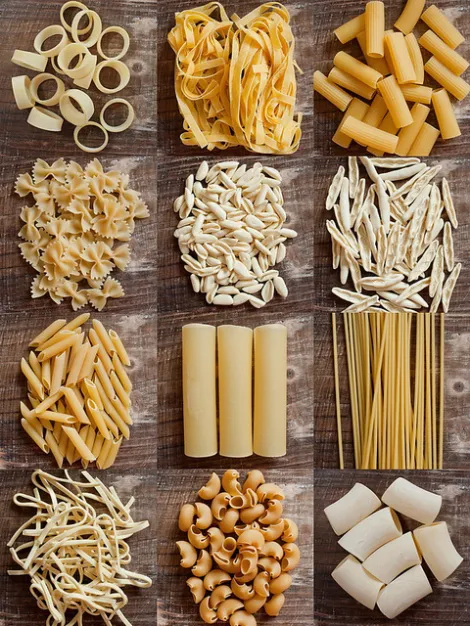
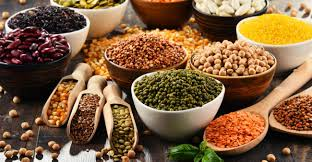

INGREDIENTES
Actualmente nuestros ingredientes son:
¡Nuestros ingredientes son los más frescos y naturales originarios de nuestro país!



A continuación, se podrá mostrar los ingredientes
Actualmente nuestros ingredientes son:
¡Nuestros ingredientes son los más frescos y naturales originarios de nuestro país!

